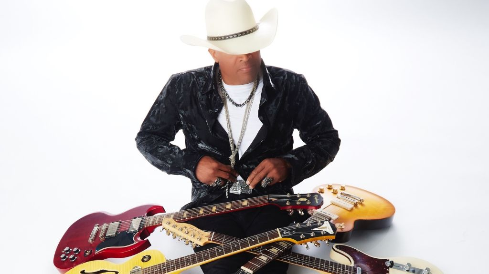

Issues #16 Features

The following features are now included in our online magazine which is also available in print.
Issue #16
Online Magazine | Print MagazineJoel Veena – Reminder: Discipline in Motion
Reminder by Joel Veena Eisenkramer is a meditative instrumental piece built on discipline, patience, and dialogue between Indian slide guitar and jori drum. Rooted in raga Jaunpuri, the composition unfolds slowly, prioritizing structure over spectacle. Veena’s 20 string slide guitar sings with fluid precision while Jasdeep Singh’s percussion provides a grounded pulse that shapes every phrase. Rather than chasing momentum, the piece embraces resistance as part of growth, letting tension guide its evolution. Veena’s background in Hindustani classical music and cross cultural performance informs the work’s balance of tradition and experimentation. The result is a focused conversation between melody and rhythm, where neither dominates. Reminder becomes less about display and more about awareness, inviting listeners into a reflective space where endurance, restraint, and intention define the listening experience from beginning
DELTA FIRE – Eyes Burn Gold: Psychedelic Rock in Motion
Eyes Burn Gold by Glasgow band DELTA FIRE is a cinematic blend of psychedelic rock, progressive structure, and mythic storytelling. The track begins with grounded riff driven energy before expanding into a sprawling, evolving soundscape. Influenced by classic acts like Rush and Cream, the song balances bluesy grit with ambitious composition. Lyrically, it builds a surreal world filled with unstable visions, glowing imagery, and shifting realities. The arrangement mirrors this narrative, growing denser and more intense as it progresses. Recorded at Chem 19 studio, the production captures both clarity and raw power, allowing each instrument to breathe while contributing to the larger momentum. DELTA FIRE avoid nostalgia by reinterpreting classic rock language through a modern cinematic lens, creating a journey like structure that feels immersive, unpredictable, and emotionally charged start
Tigers of Tin Pan – Doris: Fragmented Identity in Sound
Doris is a fragmented psychedelic pop experiment that explores identity, memory, and digital self construction. Built from shifting sections and unstable structures, the track refuses traditional form, instead behaving like a collage of sonic ideas. Its origins trace back to early internet culture and a fictional MySpace persona, shaping its themes of online identity and emotional performance. Influences from experimental rock and art pop blend into a restless sound that constantly mutates. Vocal contributions add grounding contrast to the surreal arrangement, while the production moves between melodic fragments and chaotic transitions. The song reflects years of collaborative experimentation across multiple musicians and projects, existing more as an evolving archive than a conventional single. Doris ultimately embraces instability, turning confusion and contradiction into its core artistic statement and leaving impressions only
Beat The Drum – London Jazz-Electronic Fusion in Motion
Beat The Drum is a London based duo blending jazz improvisation, electronic production, and club driven rhythm into a fluid, genreless sound. Built by Chris Calloway and Steve Murrell, their music thrives on movement and contrast, combining live instrumentation with studio crafted textures. Saxophone, percussion, and synth lines interact in constant dialogue, creating a dynamic sense of flow rather than fixed structure. Their west London studio environment fuels an experimental approach, where ideas evolve quickly and without restriction. Influences from modern jazz collectives, electronic pioneers, and art pop traditions shape their identity, but the duo avoids imitation by treating genre as material rather than boundary. The result is immersive, rhythmic, and atmospheric music that reflects the energy of London itself, constantly shifting between groove, improvisation, and cinematic sound design listening
BOYSARM – Elite EP Moves With Lagos Rhythm and Global Intent
BOYSARM’s Elite EP arrives with clarity and purpose, rooted in Lagos while reaching beyond it. The project balances melody and rhythm with restraint, reflecting both the city’s motion and the artist’s focus. Still studying at University of Lagos and signed to Lestat Entertainment, he approaches the release with confidence rather than experimentation.
“I Go Lie for You” anchors the emotional core, framing devotion as something unwavering, while “Oroma” blends Amapiano and Afrobeats into a fluid groove that celebrates African identity through rhythm.
The EP avoids excess, letting each element breathe. With support from the British Council and a growing live presence, Elite feels less like an introduction and more like a clear step forward.
Alex Winters – Break In Turns Vulnerability Into Controlled Collapse
On Break In, Alex Winters steps directly into vulnerability, framing it as risk rather than release. The track, created with Animal Farm, explores what happens when emotional defenses are handed over instead of lowered.
Built from a demo sent from Austin to London and shaped by Mat Leppanen, the song mirrors that distance with tension and control. Sonically, it draws from 90s pop rock—echoes of Third Eye Blind and Matchbox Twenty—while maintaining a modern alt-pop edge.
Winters’ vocal stays restrained but fragile, never fully breaking. Recorded at Black Roses Recordings, the performance keeps its raw edges intact. The result is a track that finds strength not in resolution, but in uncertainty.
This dispatch was last updated on April 20, 2026